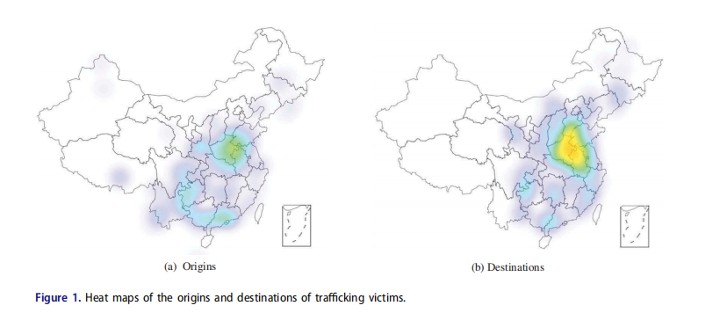
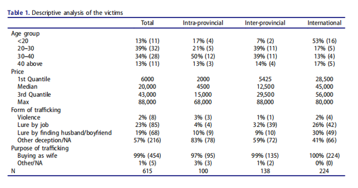
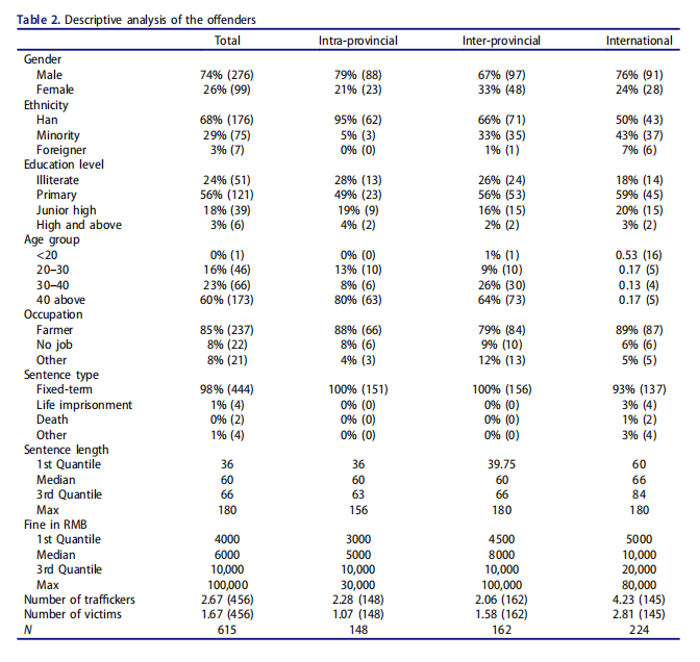
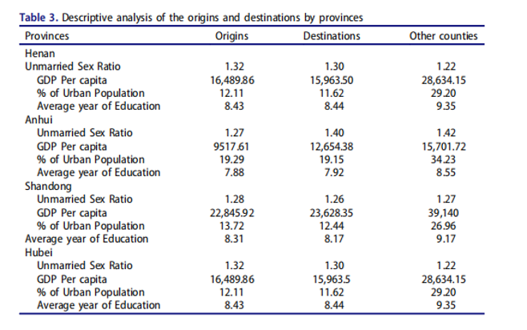
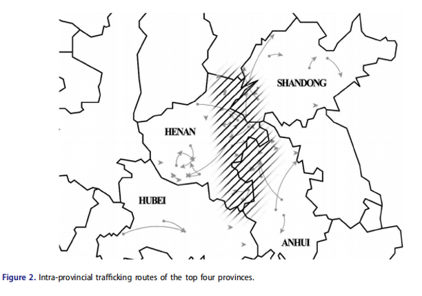
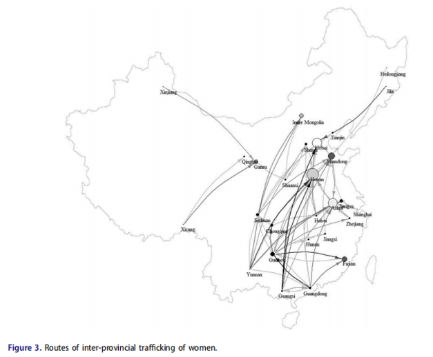
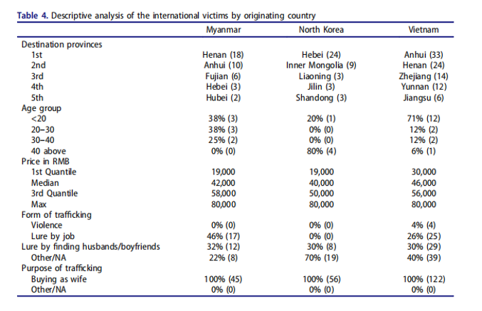
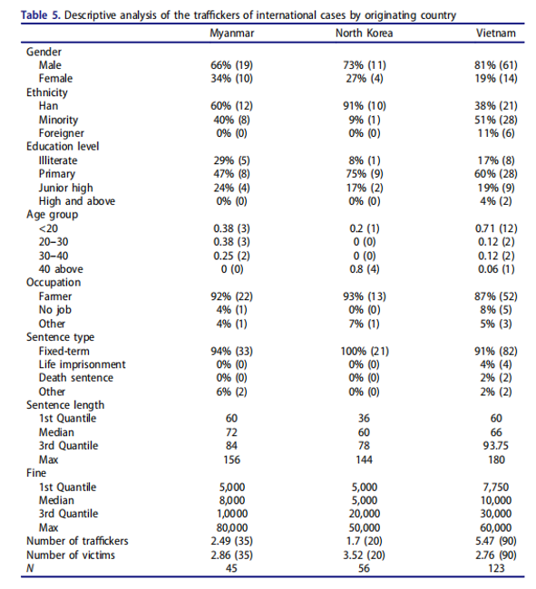

收录于合集
导读
本文选自《当代中国》杂志（Journal of Contemporary China），分析了中国妇女贩卖案的分布范围及其性质，其数据源于中国公开的法院量刑文件，从既有的法律判决的角度描述了妇女贩卖罪行产生的原因和发展概况。一直以来，根治这一社会顽疾既是国家治理和法治进程的重要课题，也需要全体社会成员的共同反思和重视。
值得一提的是，中国在打击贩卖人口方面连出重拳并有所作为，例如2015年生效《刑法修正案(九)》除了给拐卖妇女定罪之外，也规定收买被拐卖的妇女、儿童的同属犯罪。此外，中国也加入了相关国际合作机制，例如，2009年加入联合国大会针对全球人口贩卖问题的《巴勒莫议定书》；积极参加“联合国机构间湄公河次区域合作反对拐卖人口项目”，先后与缅甸、越南、老挝、柬埔寨等国签署了关于加强打击拐卖犯罪合作的政府间协定。这一系列举措对于打击社会上的人口贩卖罪行具有积极作用。（本文转自“国际关系学园”，内容不代表“国政学人”观点）
摘 要
近年来，逐渐被揭露的妇女贩卖问题引起了中国公众的关注。本文选取2014-2015年中国妇女贩卖的法院量刑文件，通过将法院数据映射为地理信息并进行网络分析，较为全面地展示了省内、省际和国际妇女贩卖的模式。据分析，国际贩卖已成为妇女贩卖的最大类别，受害者通常为越南、缅甸和朝鲜的20多岁的年轻女性，她们被卖到中国的中部省份。在国内，省际妇女贩卖的数量超过了省内妇女贩卖的数量，受害者从西南省份被卖到中部省份。省内妇女贩卖则主要集中于河南、安徽、山东、河北四个省份。
01
介绍
人口贩卖，尤其是妇女贩卖，被认为是一种公然侵犯基本人权的现代奴隶行为。既有文献讨论了中国现存妇女贩卖的原因和模式，即独生子女政策和偏好男孩的社会文化导致了男女性别比例失衡，在农村尤其如此，这导致强迫婚姻成为中国贩卖妇女的主要形式。关于中国妇女贩卖的模式，研究表明，妇女贩卖在各省的分布并不均等，最典型的目的地是中部省份的农村和人口稠密地区，如河南、湖北和安徽，这些地区的男女性别比例非常失衡且经济发展滞后。然而，缺乏数据一直是研究人口贩卖的最大障碍之一。 本文利用中国最高人民法院发布的妇女贩卖量刑文件，对2014-2015年内的文件数据进行了定量研究，旨在调查妇女贩卖的热点地区、妇女贩卖的地理模式及其可能的产生原因。 尽管单一的信息来源不能完整地反映中国妇女被贩卖的程度，但判决文件提供了关于受害者个人的有用信息，例如，她们的来源和目的地。利用地理信息系统（GIS）技术，该研究能够准确定位和对贩卖网络进行可视化，并总结出贩卖模式，有助于更好地了解中国大陆妇女贩卖的性质。
02
数据和测量
本文从中国裁判文书（China Judgments Online）网站上选取了2014-2015年根据中国《刑法》第240条（禁止绑架和贩卖妇女或儿童）进行审判的387起贩卖妇女案件的量刑文件，对这387起案件的615名受害者、456名罪犯及他们的来源地和犯罪目的地进行了编码。编码包括：受害者的年龄、被出售的价格，以及受害者被贩卖的形式和目的；罪犯的年龄、性别、种族、受教育程度、职业、刑期的类型和长度及罚款数额；贩卖案件的目的地和来源地的地理编码也被记录下来并与若干社会经济指标相匹配，如：未婚男女比例、人均GDP、城市人口比例和2010年中国人口普查中县级的平均受教育年限等，来源地和目的地的地理编码也被用作构建贩卖路线。
分析方法：首先，利用热图来显示贩卖的起源地和目的地最集中的地区，并对整个样本和每种贩卖类型提供描述性分析。其次，根据贩卖妇女的类型进一步分析原因。最后，对国际贩卖受害者的三个主要来源国（越南、缅甸和朝鲜）进行了比较。
03
分析结果
3.1.整体模式
图1展示了受害者的来源地及其被贩卖的目的地的热图。 颜色越深表明该地被贩卖的妇女数量越多 。与之前的研究结果一致， 中部省份是妇女贩卖受害者最常见的目的地。相比之下，受害者来源地的分布更为广泛 。省内贩卖也集中在中部省份。贩卖活动很可能从西南部省份（四川、贵州和云南）与南部省份（广西和广东）流向中部省份。

图1：受害者来源地及其目的地的热图
表1和表2展示了省内、省际和国际妇女贩卖的受害者和罪犯的描述性统计数据。表1显示，在463名受害者中，国际受害者占总受害者的48%，其余都是国内受害者。国际受害者年龄较低（70%的受害者年龄在30岁以下，而国内受害者30岁以下的相应比例为42%）、售价较高（中位数为45,000元人民币，省内类别的中位数为4,500元人民币，省际类别的中位数为12,500元）。在不考虑由于法外制裁而可能被排除在外的情况下， 贩卖目的通常是将妇女作为“新娘”出售，但用来引诱受害者的主要欺骗方法则根据受害者的来源地而有所不同。例如，在省际贩卖中，更多的受害者被工作所欺骗，而对于国际贩卖案件，更多的受害者被潜在的婚姻安排所引诱。
表1：受害者的描述性分析

平均而言，典型的人口贩卖者是男性（74%），40岁以上（60%），汉族（68%），农民（85%），具有小学或更低程度的教育水平（80%）。与省内贩卖相比，省际贩卖的罪犯更有可能是女性（33%），少数民族（33%）且略微年轻（40岁以下），见表2。
表2：罪犯的描述性分析

法院的量刑结果取决于贩卖的模式。 贩卖的距离越长，处罚越严厉，原因在于距离越长，参与罪犯和波及的受害者就越多。例如，国际案件中涉及的贩卖者和受害者的平均人数分别为4.21和2.08，而省内案件的相应数值为2.28和1.07，省际案件为2.06和1.58。 因此 ，国际罪犯更有可能被判处终身监禁、死刑，或更长的刑期和更高的罚款。同样，省际罪犯的刑期和经济处罚也重于省内罪犯。
为了进一步探讨人口贩卖的可能原因，表3列出了妇女贩卖目的地最集中的4个省份，即河南、安徽、山东和湖北，及其县级未婚性别比、人均GDP、城镇人口百分比和平均受教育年限。 在未婚性别比方面，除安徽省外，来源地和目的地的未婚性别比差异不大，意味着妇女贩卖可能不是由性别比失衡引发的。 在人均GDP方面，除山东省外，来源地和目的地的人均GDP均未超过2万元人民币，低于没有贩卖案件的县， 表明了经济发展水平与贩卖妇女之间的密切联系。 此外，安徽省的来源地和目的地在人均GDP上的差异更大，这意味着相对于其他三省，更多来自欠发达地区的受害者被贩卖到安徽。来源地和目的地的城市人口比例都在五分之一左右，远低于所列四个省中没有贩卖案件的县， 这表明妇女贩卖在农村地区非常普遍，并且来源地和目的地的平均受教育年限都较低。
表3：来源地和目的地的描述性分析

3.2.省内贩卖
省内贩卖案例（73.5%）多来自表3所列的4个省份，其中分别为河南（33例）、安徽（12例）、山东（9例）和湖北（7例）。从地理位置来看，这四个省在中国中部彼此相邻。图2显示了各省内受害者的贩卖路线。阴影区覆盖了山东、河南、安徽的省界，
表明60%以上的省内案例集中于此。 此外，阴影区域与图1所示的热图中最亮的区域重叠， 表明这三个省份的边界处是省内妇女贩卖最频繁的热点地区。
此外，受害者在阴影地区被贩卖的距离比其他地方短， **表明这些地区的当地市场很活跃。
**

图2：最猖獗的四个省内妇女贩卖路线图
3.3.省际贩卖
**
**
图3显示了省际贩卖的路线，其中点表示省会城市，线路用箭头指示方向连接发送和接收的位置。接收和发送受害者的数量分别用一个点的大小和灰度表示。 点越大，接收的受害者就越多；点越深，发送的受害者就越多。线的灰度对应贩卖的数量。

图3：省际妇女贩卖路线
在中国，最明显的贩卖模式是从边境到中部地区。 例如，中部省份（河南、安徽、山东和河北）是跨省贩运妇女最频繁的目的地；相对而言，边境省份，特别是西南和南部省份（贵州、广西、广东和云南）则是常见的来源地。此外，少数特定 路线在妇女贩卖网络中占主要地位 ，例如，从广西到河北、广西到河南、云南到河南等路线是最经常使用的，这些路线的贩卖量加起来占总贩运量的50%以上。
3.4.国际贩卖
国际贩卖的受害者来自三个国家：越南（53.91%）、朝鲜（26.00%）和缅甸（20.09%）。 表4的按其来源和目的地显示了国际受害者的分类。 越南和缅甸的受害者遵循了类似的省际贩卖模式：从边境到中部省份，如河南和安徽；朝鲜的受害者则通常被卖到东北。虽然与国内受害者相比，国际受害者普遍较年轻，但来自朝鲜的受害者年龄最大（80%在40岁以上），而且售价最低（中位数为4万元人民币），其次是越南（6%在40岁以上）和缅甸（ 0%在40岁以上）。 所有受害者都被作为“新娘”出售，但被贩卖的形式有所不同。例如，30%来自朝鲜的受害者被婚姻骗局所误导，其余的则是通过其他类型的欺骗行为被贩卖。有趣的是，据说没有一个受害者被工作机会所误导，或被暴力绑架。对于来自缅甸和越南的受害者，除了 “被买来做妻子”的比例与朝鲜相似外，更多的受害者是被工作所诱惑（越南为26%，缅甸为46%），这表明寻找高薪工作对两国的受害者都有吸引力，特别是缅甸的受害者，因为该国的人均GDP只有越南的一半。
表4：国际贩卖受害者来源国的描述性分析

从表5可以看出，与国内案例一致， 罪犯多为男性、农民、受教育程度不高于小学 。罪犯的种族分布因国家而异， 相同的种族背景或国籍可以帮助罪犯获得受害者的信任 。在量刑结果方面，对贩卖朝鲜妇女的罪犯的量刑严重程度低于贩卖越南和缅甸妇女的罪犯。最后，按照来源国的罪犯和受害者人数来看，贩卖朝鲜妇女的罪犯人数低于越南和缅甸，而朝鲜的受害者人数高于越南和缅甸。
表5：国际案例罪犯的描述性分析

04
结论
通过使用法院的判决文件，本文确定了 中国目前存在三种类型的妇女贩卖：省内、省际和国际贩卖。研究表明，山东、河南、河北、安徽等中部省份是所有贩卖类型的主要目的地，其中一半以上的省内妇女贩卖发生在这些地区。 省际贩卖则更多发生在从西南和南部边境省份到中部省份的路线上。国际妇女贩卖已经成为最大的类别，受害者来自越南、缅甸和朝鲜。
其次，如果研究忽略了不包括在刑事司法系统中的案件， 三种贩卖类型的受害者都被作为“新娘”出售 。国际受害者年龄最小、售价最高，其次是省际和省内的受害者。国际和省际受害者更容易被工作机会或婚姻安排的虚假承诺所欺骗。 罪犯大多是受教育程度有限的中年男性农民 ，但国际罪犯较年轻，种族背景往往也与受害者不同。此外，国际案件涉及的罪犯和受害者都更多，这表明国际案件可能更有组织性，因此刑罚更为严厉。
最后， 女性并不总是从男女性别比较低的地方被贩卖到男女性别比较高的地方。这样的发现与之前的研究相一致，这些研究显示，在非洲和东欧的部分性别比例正常的地区，妇女贩卖更为普遍 。与没有妇女贩卖的邻近县相比，妇女贩卖的来源地和目的地都相对较贫穷，城市化程度较低，教育水平也较低。目前的研究结果并没有证实原籍地和目的地之间的性别比例失衡是妇女贩卖的驱动因素之一的假设。相反，本研究认为，目的地的社会经济发展滞后和高性别比水平可能直接促使妇女贩卖，并被贩卖者认为是一个潜在市场。
本文为打击中国妇女贩卖提供了基于证据的策略： 第一，在目前研究确定的热点和高频路线上安排打击妇女贩卖犯罪的警务力量。第二，继续与越南、缅甸、朝鲜等国家建立有效的双边合作机制来打击跨国妇女贩卖。第三，应为边境警察和海关提供排查和保护贩卖受害者的培训方案。
来源： Yiwei Xia, Yisu Zhou, Li Du & Tianji Cai (2019): Mapping Trafficking of Women in China: Evidence from Court Sentences, Journal of Contemporary China ,
DOI: 10.1080/10670564.2019.1637564
编译： 国际关系学园 ****
文章观点不代表本平台观点，本平台评译分享的文章均出于专业学习之用, 不以任何盈利为目的，内容主要呈现对原文的介绍，原文内容请通过各高校购买的数据库自行下载。